Publications
See also Google Scholar.
Journal Articles
2026
- JCSS
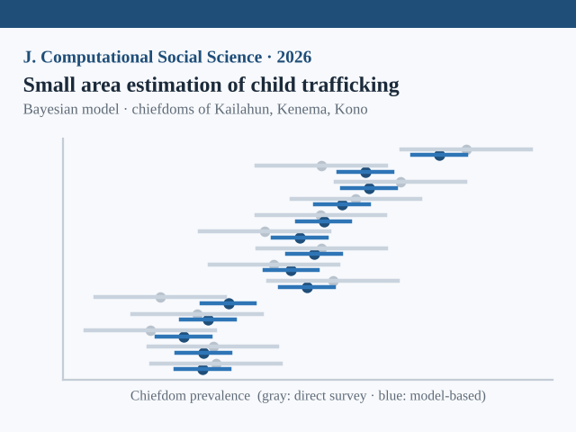
A Novel Application of Small Area Estimation Methodology to Study Child-Trafficked Population in Sierra LeoneJournal of Computational Social Science, 2026@article{yi2026novel, title = {A Novel Application of Small Area Estimation Methodology to Study Child-Trafficked Population in Sierra Leone}, author = {Yi, H. and Li, J. and Datta, G. and Okech, D. and Clay-Warner, J.}, journal = {Journal of Computational Social Science}, year = {2026}, doi = {10.1007/s42001-026-00476-1} } - JSTP
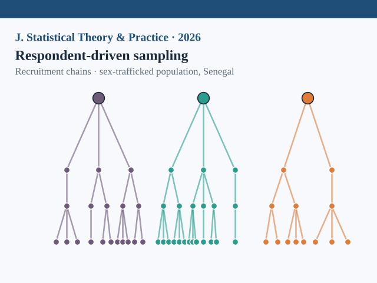
New Perspectives of Respondent-Driven Sampling with Application to a Sex-Trafficked Population in SenegalJournal of Statistical Theory and Practice, 2026@article{yi2026new, title = {New Perspectives of Respondent-Driven Sampling with Application to a Sex-Trafficked Population in Senegal}, author = {Yi, H. and Liu, X. and Deng, X. and Liu, L. and Okech, D.}, journal = {Journal of Statistical Theory and Practice}, year = {2026}, doi = {10.1007/s42519-026-00612-0} } - SEM
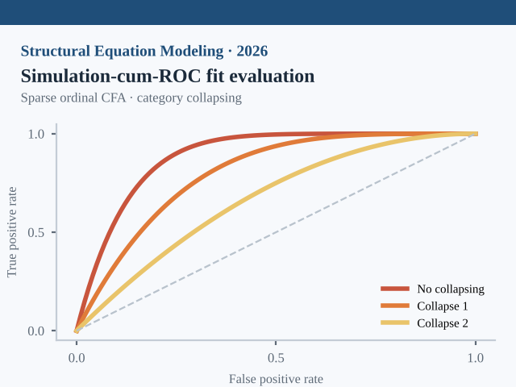
Simulation-cum-ROC Fit Evaluation in Sparse Ordinal CFA Under Category CollapsingStructural Equation Modeling: A Multidisciplinary Journal, 2026@article{liu2026simulationcumroc, title = {Simulation-cum-ROC Fit Evaluation in Sparse Ordinal CFA Under Category Collapsing}, author = {Liu, L. and Liu, J. and Yi, H. and Okech, D.}, journal = {Structural Equation Modeling: A Multidisciplinary Journal}, year = {2026}, url = {https://osf.io/b7atw/overview} }
2025
- JSSAM
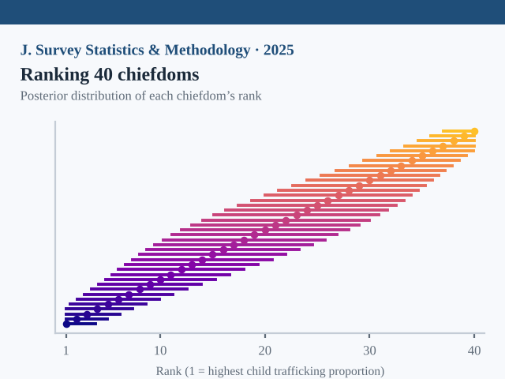
Small Area Estimation of Child Trafficking Proportions in Chiefdoms of Sierra Leone and Overall Ranking of the ChiefdomsJournal of Survey Statistics and Methodology, 2025@article{datta2025small, title = {Small Area Estimation of Child Trafficking Proportions in Chiefdoms of Sierra Leone and Overall Ranking of the Chiefdoms}, author = {Datta, G. and Li, J. and Yi, H. and Okech, D.}, journal = {Journal of Survey Statistics and Methodology}, year = {2025}, doi = {10.1093/jssam/smaf013} } - Soc. Netw.
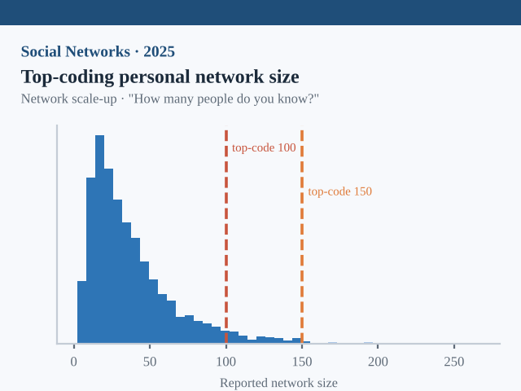
A Comparison of Top-Coding Strategies in Scale-Up Estimation of Personal Network SizeSocial Networks, 2025@article{claywarner2025comparison, title = {A Comparison of Top-Coding Strategies in Scale-Up Estimation of Personal Network Size}, author = {Clay-Warner, J. and Yi, H. and Li, J. and Kawashima, T. and Okech, D. and Konteh, F.H.}, journal = {Social Networks}, year = {2025}, url = {https://www.sciencedirect.com/science/article/abs/pii/S0378873325000371} }
2024
- TVA
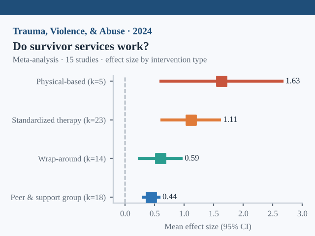
Do Social Service Interventions for Human Trafficking Survivors Work? A Systematic Review and Meta-AnalysisTrauma, Violence, & Abuse, 25(3), 2012–2027, 2024Systematic Review & Meta-AnalysisHuman trafficking leaves victims with long-term social, psychological, and health effects. Research in this area is still nascent, and there are limited studies that show the effectiveness of existing services for survivors. This study fills the gaps in knowledge of the effectiveness of existing programs through a comprehensive systematic review and meta-analysis. Inclusion and exclusion criteria retained 15 studies using the preferred reporting items for systematic reviews and meta-analyses method, containing 16 populations. Included studies examined programs and/or interventions providing direct services to human trafficking survivors using quantitative pre- and post-intervention measurements published from January 2010 to June 2022. Outcomes among survivors were grouped into five categories: (a) mental health, (b) physical health, (c) social support or social behavior, (d) personal development, and (e) other. […] While only 15 studies contributed to this analysis, the current study ushered in new avenues regarding future research, policies, and practice in services for survivors of human trafficking.
@article{schroeder2024social, title = {Do Social Service Interventions for Human Trafficking Survivors Work? A Systematic Review and Meta-Analysis}, author = {Schroeder, E. and Yi, H. and Okech, D. and Bolton, C. and Aletraris, L. and Cody, A.}, journal = {Trauma, Violence, & Abuse}, year = {2024}, volume = {25}, number = {3}, pages = {2012--2027}, doi = {10.1177/15248380231204885} } - SWSSR
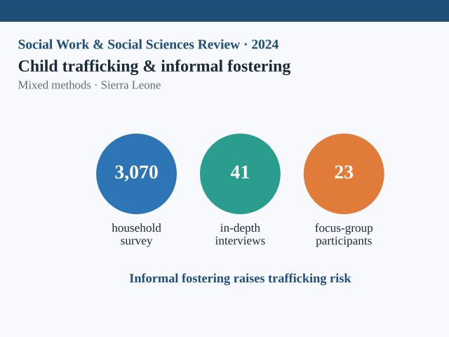
When Child Trafficking and Informal Fostering Intersect: A Mixed Methods StudySocial Work and Social Sciences Review, 24(2), 33–61, 2024@article{cody2024when, title = {When Child Trafficking and Informal Fostering Intersect: A Mixed Methods Study}, author = {Cody, A. M. and Okech, D. and Yi, H. and Aletraris, L. and Clay-Warner, J. and Callands, T.}, journal = {Social Work and Social Sciences Review}, year = {2024}, volume = {24}, number = {2}, pages = {33--61}, doi = {10.1921/swssr.v24i2.2026} }
2023
- Crime Delinq.
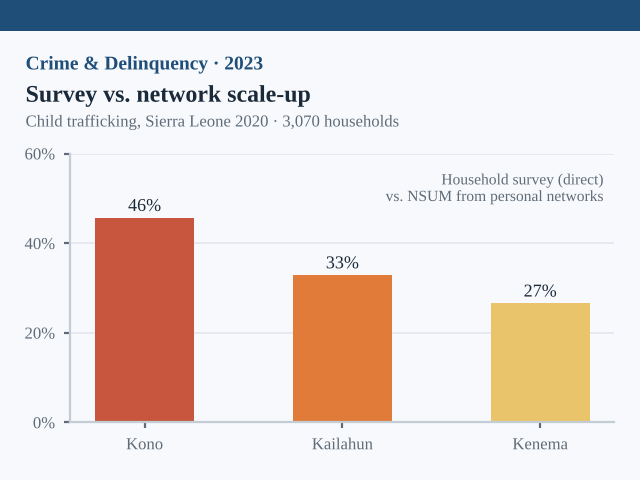
An Empirical Comparison of a Traditional Strategy and Network Scale-Up Method for Prevalence Estimation of Child Trafficking in Sierra LeoneCrime & Delinquency, 2023@article{yi2023empirical, title = {An Empirical Comparison of a Traditional Strategy and Network Scale-Up Method for Prevalence Estimation of Child Trafficking in Sierra Leone}, author = {Yi, H. and Vincent, K. and Okech, D. and Clay-Warner, J. and Li, J. and Kawashima, T. and Hassan Konteh, F.}, journal = {Crime & Delinquency}, year = {2023}, doi = {10.1177/00111287231170122} }
2017
- TIP
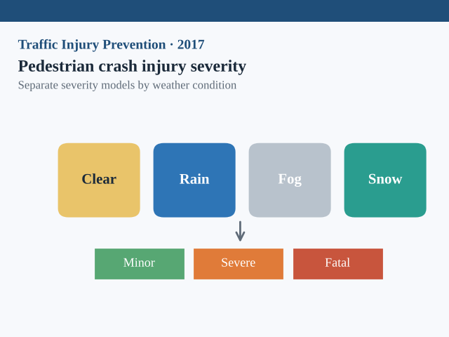
Analyzing Pedestrian Crash Injury Severity Under Different Weather ConditionsTraffic Injury Prevention, 18(4), 427–430, 2017@article{li2017analyzing, title = {Analyzing Pedestrian Crash Injury Severity Under Different Weather Conditions}, author = {Li, D. and Ranjitkar, P. and Zhao, Y. and Yi, H. and Rashidi, S.}, journal = {Traffic Injury Prevention}, year = {2017}, volume = {18}, number = {4}, pages = {427--430}, doi = {10.1080/15389588.2016.1207762} }
2015
- Genetics
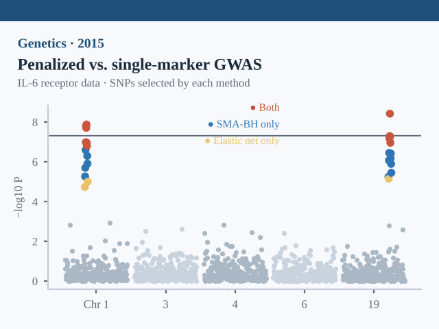
Penalized Multimarker vs. Single-Marker Regression Methods for Genome-Wide Association Studies of Quantitative TraitsGenetics, 199(1), 205–222, 2015The data from genome-wide association studies (GWAS) in humans are still predominantly analyzed using single-marker association methods. As an alternative to single-marker analysis (SMA), all or subsets of markers can be tested simultaneously. This approach requires a form of penalized regression (PR) as the number of SNPs is much larger than the sample size. Here we review PR methods in the context of GWAS, extend them to perform penalty parameter and SNP selection by false discovery rate (FDR) control, and assess their performance in comparison with SMA. PR methods were compared with SMA, using realistically simulated GWAS data with a continuous phenotype and real data. Based on these comparisons our analytic FDR criterion may currently be the best approach to SNP selection using PR for GWAS. We found that PR with FDR control provides substantially more power than SMA with genome-wide type-I error control but somewhat less power than SMA with Benjamini-Hochberg FDR control (SMA-BH). PR with FDR-based penalty parameter selection controlled the FDR somewhat conservatively while SMA-BH may not achieve FDR control in all situations. Differences among PR methods seem quite small when the focus is on SNP selection with FDR control. Incorporating linkage disequilibrium into the penalization by adapting penalties developed for covariates measured on graphs can improve power but also generate more false positives or wider regions for follow-up. We recommend the elastic net with a mixing weight for the Lasso penalty near 0.5 as the best method.
@article{yi2015penalized, title = {Penalized Multimarker vs. Single-Marker Regression Methods for Genome-Wide Association Studies of Quantitative Traits}, author = {Yi, H. and Breheny, P. and Imam, N. and Liu, Y. and Hoeschele, I.}, journal = {Genetics}, year = {2015}, volume = {199}, number = {1}, pages = {205--222}, doi = {10.1534/genetics.114.167817} }
2014
- Dissertation
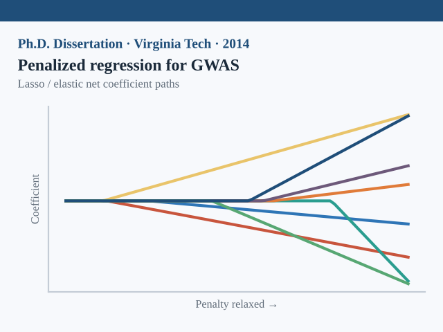
Assessment of Penalized Regression for Genome-wide Association StudiesPh.D. Dissertation, Virginia Tech, 2014Ph.D. Dissertation@phdthesis{yi2014assessment, title = {Assessment of Penalized Regression for Genome-wide Association Studies}, author = {Yi, H.}, school = {Virginia Tech}, year = {2014}, url = {https://vtechworks.lib.vt.edu/server/api/core/bitstreams/d5549f66-a14e-467f-93ad-390eaf09b227/content} }
Under Review
- MBR
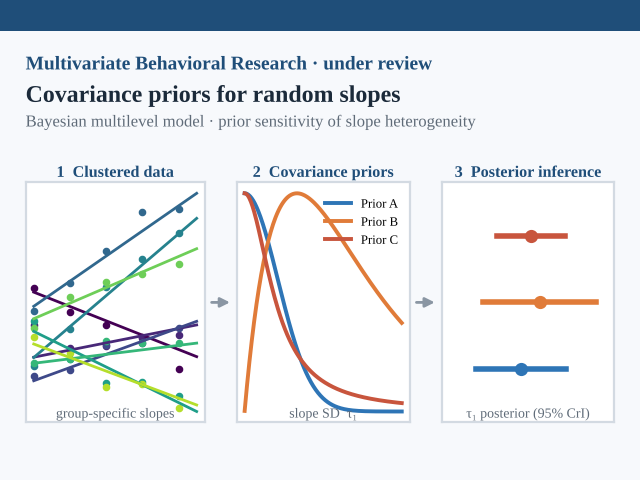
Evaluating Covariance Priors for Inference on Random-Slope Heterogeneity in Bayesian Multilevel ModelsMultivariate Behavioral Research · submitted October 2026 - CYSR
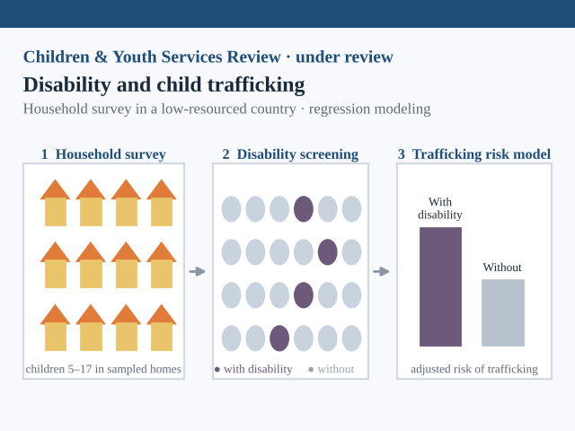
Vulnerability of Children with Disabilities in Trafficking: A Low-Resourced Country StudyChildren and Youth Services Review · submitted October 2025 - TQMP
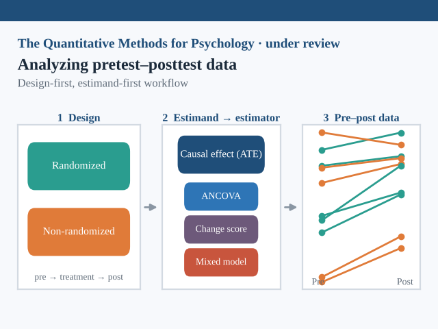
Analyzing Pretest-Posttest Data: A Design-First, Estimand-First TutorialThe Quantitative Methods for Psychology · submitted April 2026
Technical Reports
- Report
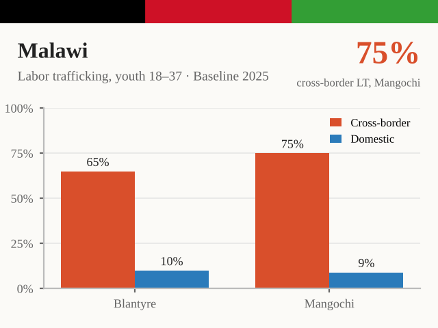
Labor Trafficking in Malawi: Prevalence, Vulnerabilities, and Recommendations for Financial Capability Intervention among Youth and Young Adults in Malawi, A Baseline StudyCenter on Human Trafficking Research & Outreach, University of Georgia, 2025 · 107 pages - Report
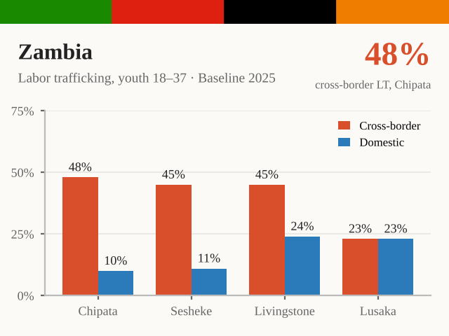
Labor Trafficking in Zambia: Prevalence, Vulnerabilities, and Recommendations for Financial Capability Intervention among Youth and Young Adults in Zambia, A Baseline StudyCenter on Human Trafficking Research & Outreach, University of Georgia, 2025 · 150 pages - Report
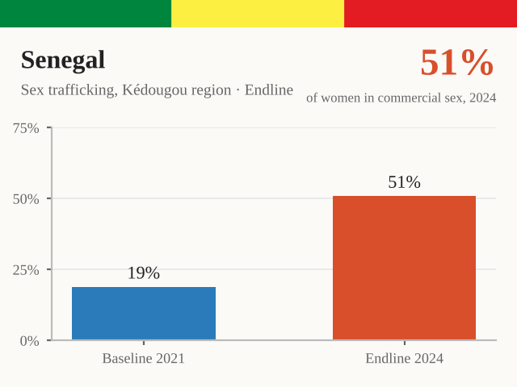
Estimating Changes in Sex Trafficking Prevalence, Perceptions and Policies in Gold Mining Communities in Kédougou, Senegal Since 2021: An Endline Research StudyCenter on Human Trafficking Research & Outreach, University of Georgia, 2025 · 68 pages - Report
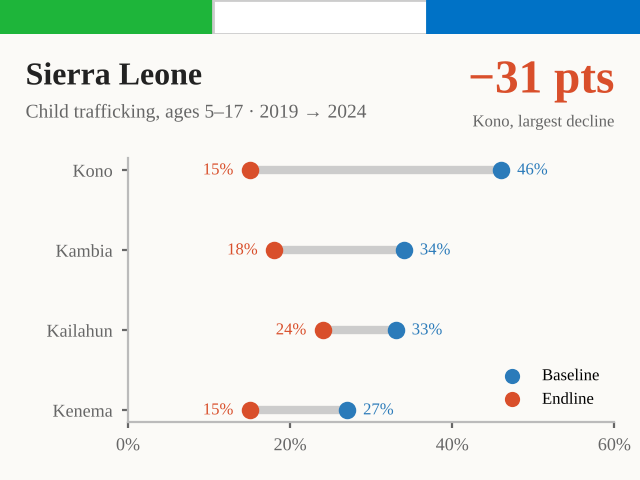
Assessing Changes in Child Trafficking and the Worst Forms of Child Labor in Sierra Leone from 2019–2024Center on Human Trafficking Research & Outreach, University of Georgia, 2025 · 93 pages - Report
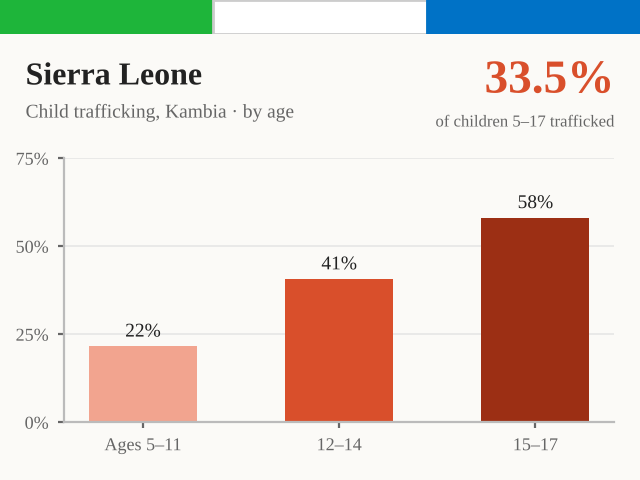
Child Trafficking and the Worst Forms of Child Labor in Kambia, Sierra Leone: A Mixed Methods StudyCenter on Human Trafficking Research & Outreach, University of Georgia, 2023 · 57 pages - Report
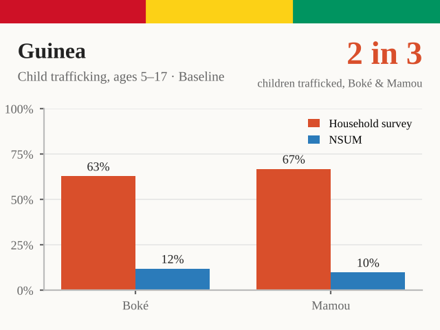
Child Trafficking and Child Labor in Guinea: A Mixed-Methods StudyCenter on Human Trafficking Research & Outreach, University of Georgia, 2022 · 105 pages - Report
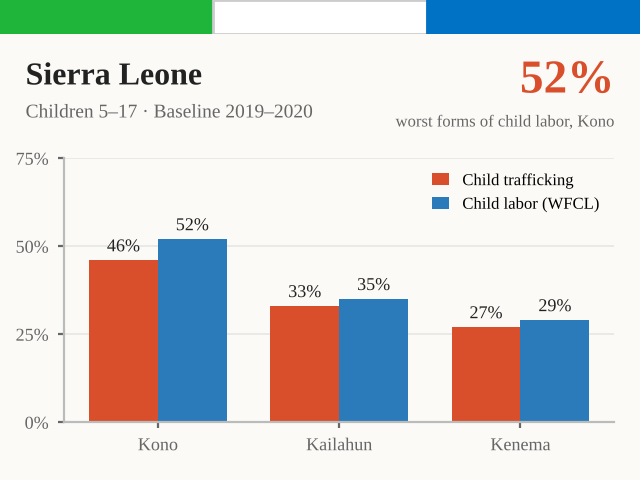
Child Trafficking and the Worst Forms of Child Labor in Sierra Leone: A Mixed Methods StudyCenter on Human Trafficking Research & Outreach, University of Georgia, 2021 · 194 pages